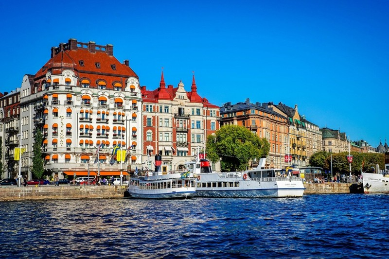
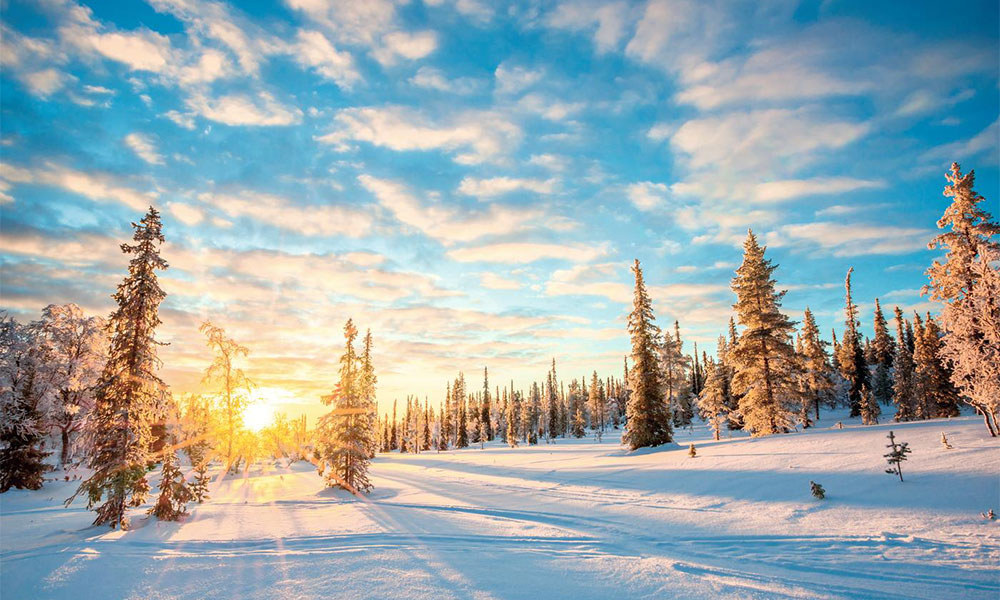
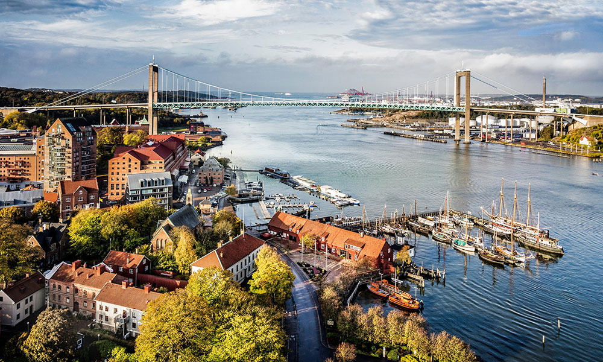

Sweden 스웨덴
| 국가면적 | 수도 | 공용어 |
|---|---|---|
| 450,295㎢ | 스톡홀름(Stockholm) | 스웨덴어 |
스웨덴은 북유럽 국가 중 하나로 스칸디나비아 반도의 동부(스칸디나비아 산맥의 동쪽), 핀란드와 노르웨이 사이에 위치하고 있습니다. 북유럽 중에서도 인구가 가장 많고 역사적으로도 스칸디나비아 지역의 패자로 군림하는 등, 전통적으로 북유럽을 주도하는 국가입니다. 스웨덴은 볼보 자동차, 뮤지션 ABBA, 가구브랜드 IKEA등으로 친숙한 나라입니다. 화려한 목조 건물, 전통적인 오두막, 암석 요새와 성당, 혁신적인 현대 건축으로 가득 차 있기 때문에 건축에 관심이 많으신 분이라면 최적의 여행지입니다. 북유럽 감성을 느낄 수 있는 스웨덴 여행 명소 3곳을 소개해드립니다.
1. 스톡홀름
스톡홀름은 14개의 섬으로 구성된 아름다운 도시로서, 스웨덴의 수도이자 스칸디나비아에서 가장 큰 도시입니다. 13세기에 세워진 도시로서, 매년 노벨상을 수상하는 장소이기도 합니다. 스웨덴 중세 박물관, 왕실 무기고, 스코클로스테르 성 등 다수의 박물관을 무료로 입장할 수 있습니다.
2. 라플란드
라플란드는 여름에는 해가 지지 않고, 계속해서 태양이 떠 있는 지방입니다. 9월부터는 오로라를 보기 위해 찾는 곳이기도 합니다. 야생동물을 흔히 볼 수 있으며, 하이킹이나 카누를 즐기기 좋습니다. 원주민인 사미 부족이 거주하는 지역이기도 합니다.
3. 예태보리
스칸디나비아에서 가장 큰 항구도시인 예태보리는 스웨덴의 서해안에 위치해 있으며, 커다란 규모의 공원이 수없이 많은 녹색도시입니다. 일년 내내 지역 최대 규모의 영화제와 음악축제가 열립니다.